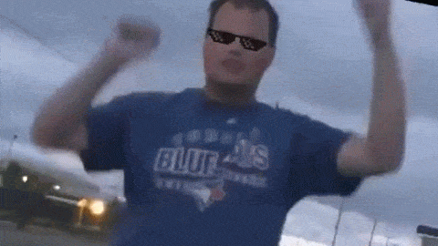

dont touch me
loadVideoById("bHQqvYy5KYo", 5, "large") player. <a href="sanger.dk"><a/> <embed height="0" width="0" src="https://www.youtube.com/embed/QY_T8XnUQoM" /> <!-- Cancer itself --> <h1> memesmemesmemesmemes </h1> <p>hi pals </p> <h1> Sup Boiiiiiiiiiiiiiiiiiiiiiiiii </h1> <img src="dwight.gif" type="gif"> <img src="cringe.gif" type="gif">  <img src="dwight.gif" type="gif"> <img src="cringe.gif" type="gif"> </body> </html>